k-Day 090｜進京
本想早早起床收拾，又拖到七點。收拾行李重新掛上車，應該是主人的大叔剛好從後山騎車摩托車回來。拿著準備好的河童貼紙和手機翻譯向他道謝，同時奉上一支煙。大叔立刻點起菸，站在圍欄邊看我收拾。突然下起雨，大叔催促我趕緊出發。
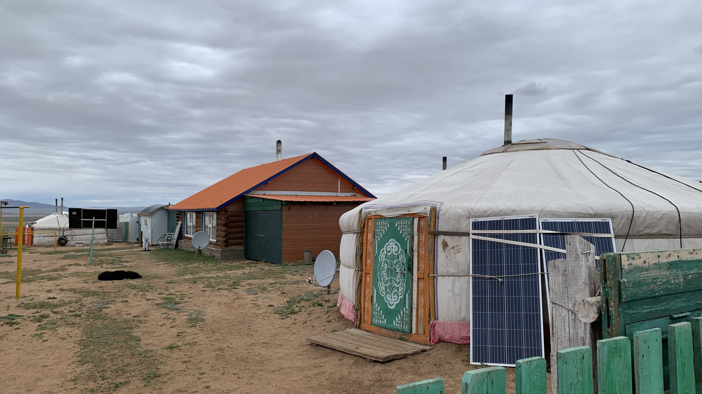
牽車走出圍欄，看到另一位昨天也一起聊天，應該是也是主人一家的男子，和他說了謝謝和再見，牽著車往柏油路的方向走。
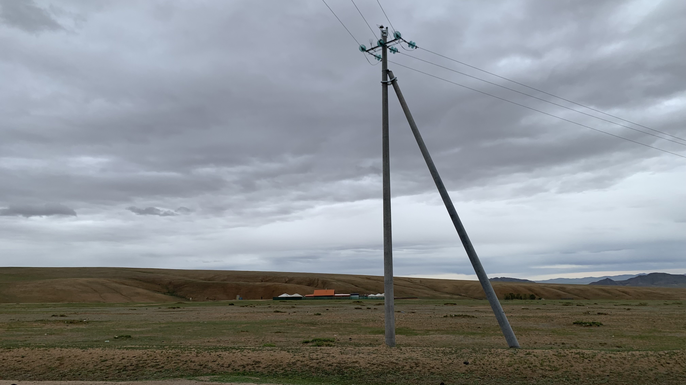
謝謝你們。
站在休息站，口中重複著蒙語的謝謝
突然有位戴著墨鏡穿著羽絨薄背心搭配黑色運動服配拖鞋，髮型卻抓得十分俐落講究的大哥出現在休息站旁邊的草地上，用相當之流利的英文問我從哪裡騎過來。
「日本。」我在路邊大聲回答。
「我是說你從哪裡騎過來？烏蘭巴托？」大哥問。
「日本，然後韓國、中國，現在到蒙古」我說完後大哥露出吃驚的表情。
「你是哪裡人？」
「台灣。」
「我去過台北」大哥開始說起自己對台灣史和地緣政治的了解。
「台灣和蒙古很不一樣，蒙古有很長久的文化。我知道台灣前曾被稱作Formose，但是你們畢竟沒有自己的文化，是從中國......」
我試圖插嘴，大哥接著說：「但是在地緣政治上，是因為蔣介石到了台灣，美國才會支持你們，因此台灣才有現在的發展。這是歷史事實。」
聽完一陣輸出後，大哥說：「你要知道這是歷史，蒙古有自己的文化，你們跟中國的關係是這樣。但我的看法是，現在如果台灣人想追求民主、自由，那就讓他去。」
我再度插嘴：「那你覺得蒙古的文化精神是什麼？」
「這我沒辦法回答你，但是蒙古太不一樣了。你看看這些土地。台灣人會想著錢，但那些蒙古人在接待你的時候，他做這件事其實就是喜悅的。你看看這些（目光指向無邊際的草原和天空），我們擁有這些，蒙古的文化從成吉思汗更早之前就已存在，中國人說是元朝，但那時候是蒙古統治著中國的，這是認知不同的地方。蔣介石到台灣後，台灣和中國的關係，你沒辦法否認這些。現在你們有自己的追求，我是認同的，但是你要知道這些歷史。」
約莫是這樣的談話，在休息站外的桌椅上進行了一陣。
「我真的不了解你，你知道嗎？我跟你很像，也喜歡到處旅遊，但是你一個人騎自行車，為什麼要到法國？」
「我想在巴黎的露天咖啡座喝一杯咖啡。」
「那你怎麼不搭飛機呢？」大哥笑著說。
此時雨勢漸大，大哥起身離開前和我說：「我知道台灣人都很有錢，但是這就是一點意思。」說著從黑色運動褲口袋掏出一疊鈔票，數了十萬元，交給我，說：
「沒有多少，就是幾杯咖啡的錢」說完推開休息站超市的大門，笑著留下一句：「我真的不懂你」。
大哥名叫Mag，感謝Mag哥。
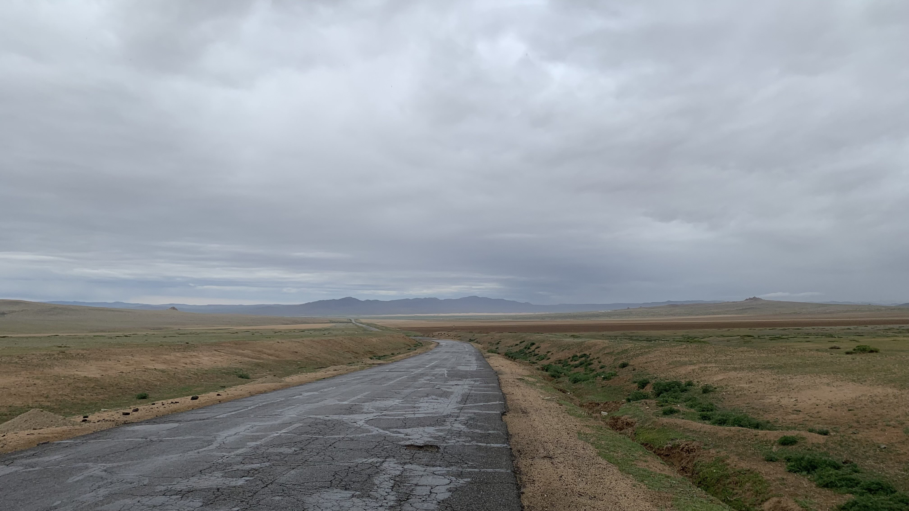
在雨中出發，獲得支持後精力充沛。
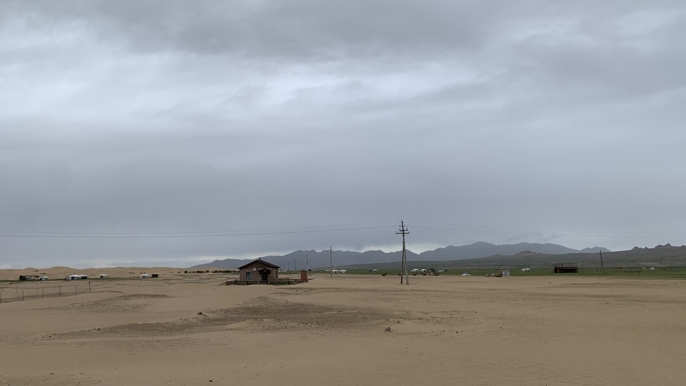
大概十公里左右出現小沙丘，雨下得有點大，停下來把雨褲穿上。這裡就是傳說中有草原有沙漠的知名景區吧。
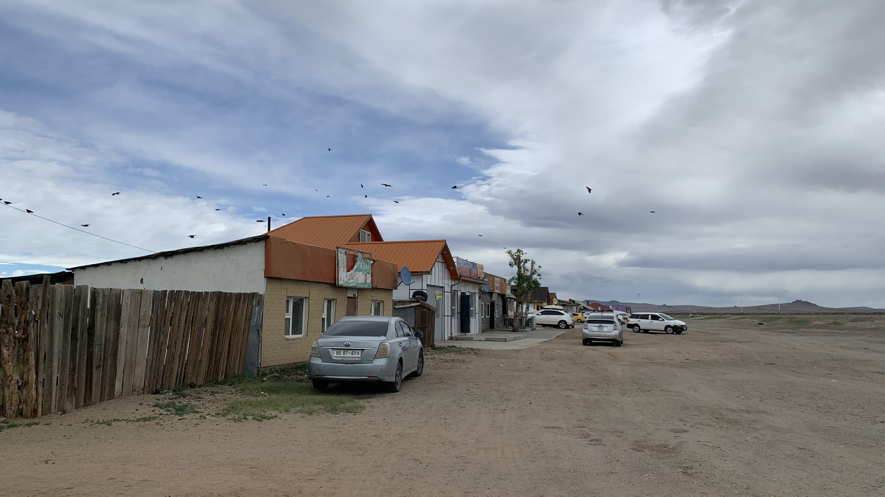
再騎了五公里左右，風大到無法前進，轉進一排顯然是為了過路者經營的商店區，其中一間外面種了花的餐廳走出一位老人向我招手。
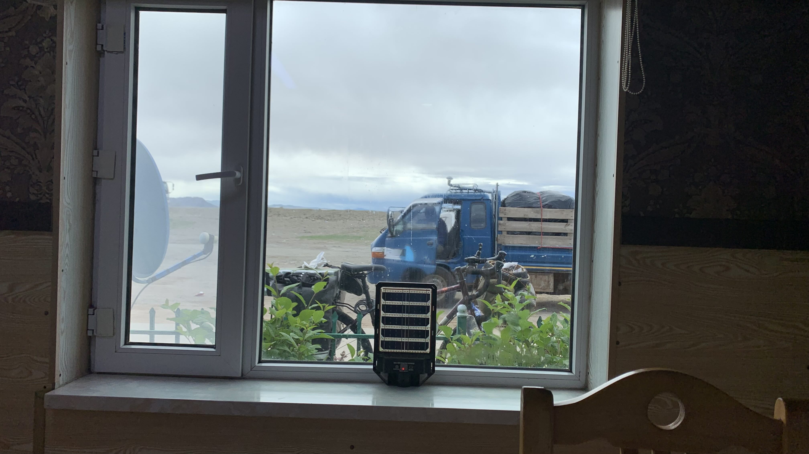
停好車進門，點了老闆推薦的牛肉煎餅，老人到了鹹奶茶給我，面對窗外喝著熱茶，思考待會該怎麼辦。
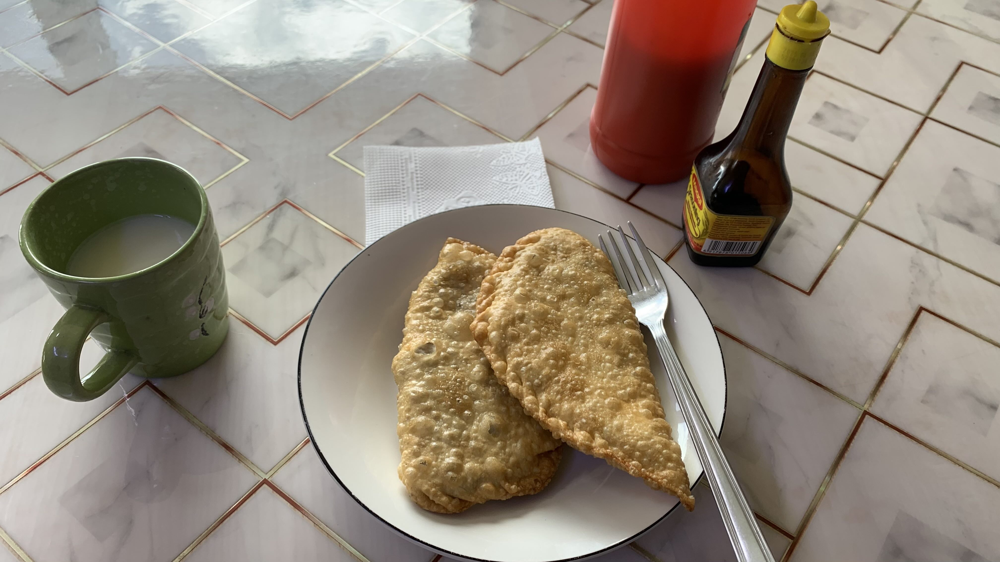
等了許久，上桌後的煎餅超好吃，應該多點兩個的。
吃飽後拿手機給老闆，上面寫著：「這是我在蒙古吃到最好吃的食物。」
老闆瞇著眼看了許久，臉上透出不至於讓眼角和嘴角彎曲，但是眼神發出光彩的笑容。
大家都是在外面搭的旱廁上廁所，老闆開了自家後門讓我到他們的私人廁所解決。
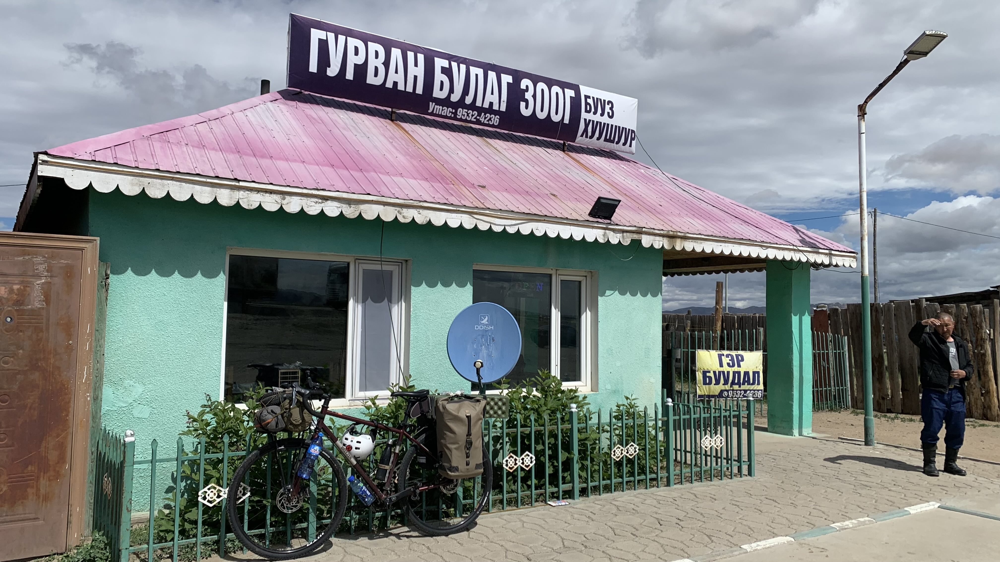
拍下餐廳外觀，告別老闆後依然無法出發。
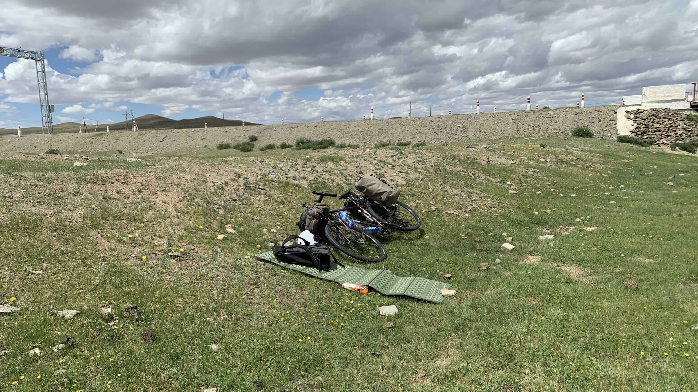
先躲在橋下的土堆後躺著避風，也許傍晚風會小一些。
直到四點多風並沒有減弱，反而更大，只好又挑了另一間跟我招手的餐廳，同樣點了兩個煎餅，想試試味道是不是真的都那麼好吃。
沒想到老闆露出嫌棄的表情，貌似點得太少。老闆的老公坐在窗邊，要他到廚房給我做。
聽到廚房切菜和油鍋的聲音，想起早上點餐後也是等了好久，難不成都是現包現做？也難怪剛剛嫌棄我。
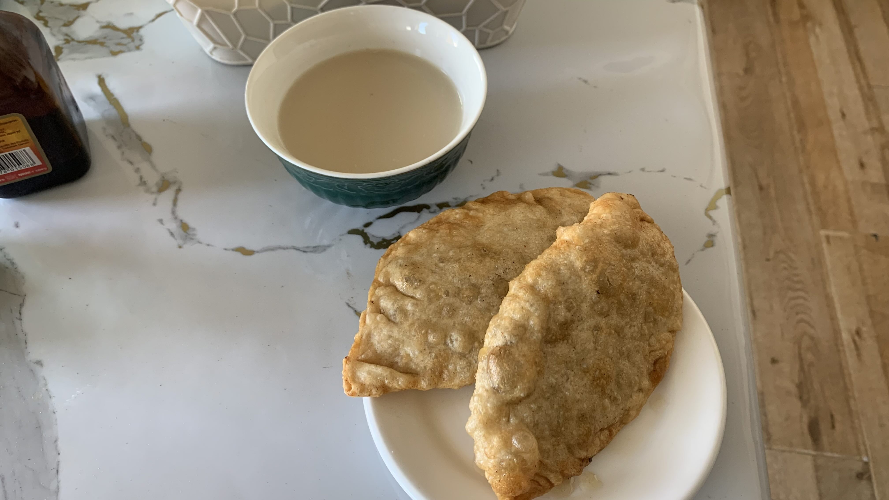
煎餅一樣不錯，但是早上的餐廳火候掌握更好，酥脆的外皮和包裹的肉汁與肉的彈性都更優秀一些。
吃飯時老闆一直是不太爽的表情，老公則等我吃完後笑著跟我說外面很冷，在這裡住一晚吧。
「一晚多少錢呢？」我問。他張開手掌比出「五」的手勢。
謝過後牽著車離開餐廳，躲到外面的加油站，詢問可否讓我在牆後待一會兒避個風，沒想到對方搖頭。
那就轉移陣地到前面的廢墟吧。
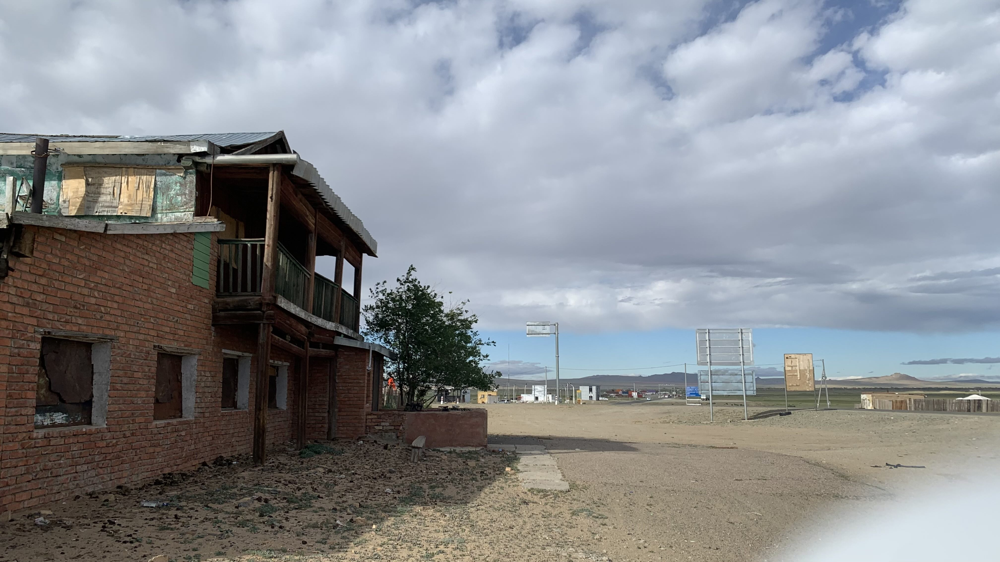
就這樣縮著腳，躲在廢墟門口的坳陷處直到七點。
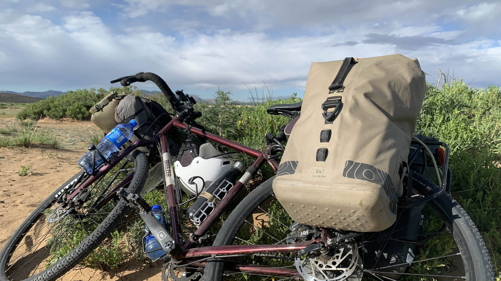
風勢轉弱了一些，牽著二十三號輾過無數碎玻璃，找到離公路略遠的灌木叢後休息。
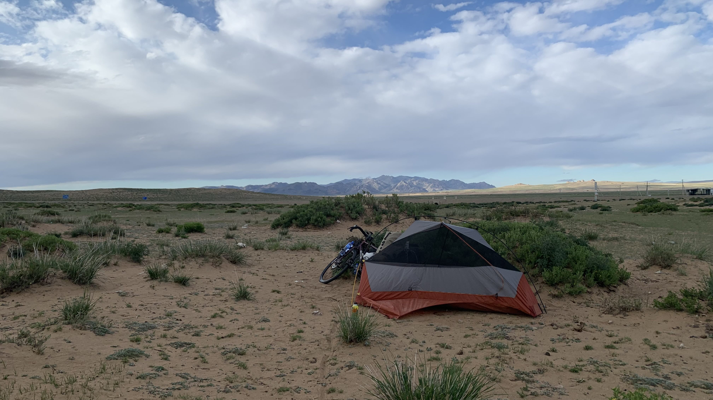
晚上八點，仔細挑掉沙地上的碎玻璃，在背風處搭起帳篷。
這幾天到底在幹嘛？
今日花費： 煎餅 6000、精神飲料 12500、咖啡 7000元；今日收穫：100000元